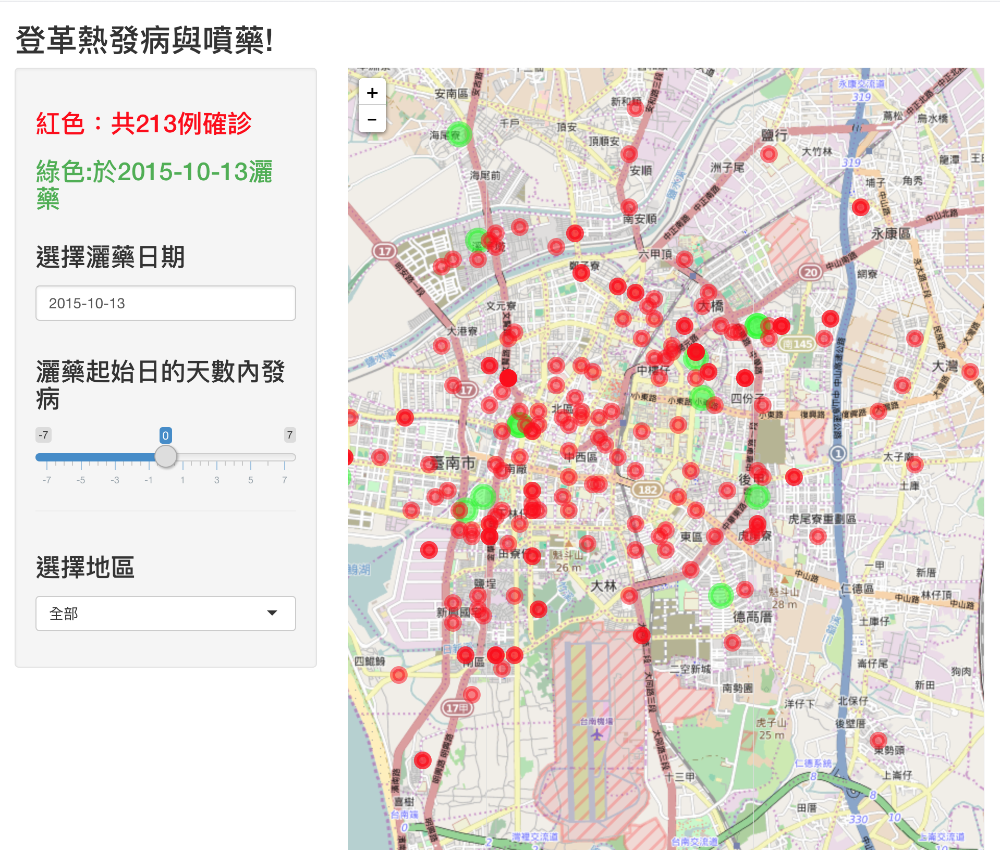
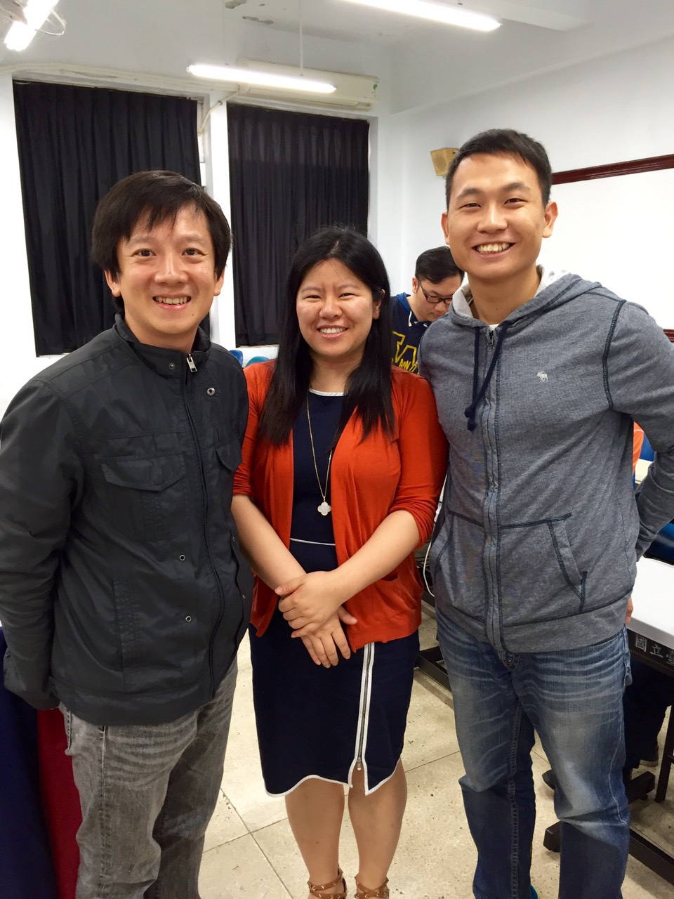

Overview
上完三天台北市電腦公會舉辦的「國際資料應擁專業養成工坊」21個小時的R語言研習課程，對Ｒ語言以及大數據的分析，運用有些許的認知：
開放資料 (Open Data)
就是可免費取得，再利用，再分發的資料
大數據 (Big Data)
大數據 不等於 開放數據 也不等於 開放政府
主要不開放使用，為企業內部分析使用
R語言的學習資源:
R有6000多個Library
人名/email/pw:DataScience
http://shiny.rstudio.com/ R的UI library
Leaflet for R 可以拿來畫地圖的R library
shinyapps.io 用來佈shinyApp的server，可以免費放5個shinyApp
資料的應用
金融數據
宣告引用對應的套件
install.packages("quantmod")
library(quantmod)
如股價，稀有元素的價格
天氣數據
透過 百度的APIStore拿到各個國家程式的天氣訊息
library(devtools)
install_github('lchiffon/REmap')
install_github('lchiffon/APItools')
航空數據
RITA 已被google收購
可以分析航班delay的資訊，原因，主要是哪家航班容易delay,哪個機場航班特別多,票價….等資訊
Twitter, facebook
主要應用在情感分析，文字分析，及關聯性
課程資訊
相關人物
| 名片 | 簡述 |
|---|---|
| 本次課程的主要講師 | |
| 實作登革熱的內容時幫忙處理Ｒ程式語言的問題,據說從高中就開始碰Ｒ，目前也是專職做清理資料及統計 | |
| 登革熱專案實作的同組夥伴 |
課程實作
課程的第二天下午開始我們各自分組找尋數據來做分析，
由於近期台南登革熱疫情嚴重，台南市政府有開放 灑藥的數據及確診的病例數
所以我想拿這兩筆數據來做 視覺化的呈現及分析
實作後的畫面如下:

原始碼如下:
登革熱與灑藥關係的專案原始碼
約略可以發現發病的症狀集中在臺南市區，灑藥並無法完全的抑制病情
不過資料來源有限，所以我們僅讓User選取灑藥日期並透過調整灑藥前後七天內的確診病例來查看
是否能有效抑制病情或者因為當地疫情升溫，所以政府才安排在當地灑藥
另外加上區域的選擇
以上都是政府有提供的資料內容做簡單的分析
相關發表的影片如下：
課程合影及證書
 |